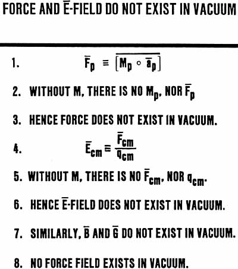

SLIDE. 14

| But
if force CONSISTS OF mass welded to acceleration, it cannot exist in the
absence of mass. Hence force does not exist in vacuum. Further, the Ë-field (Electric field) of a charged particle is defined as the force on a charged mass, divided by the mass. That is, the Ë-field is thought to represent the force per unit charged mass. And then it is assumed to exist in vacuum. But vacuum is without mass or charged mass, observably. Without mass, neither force nor charged mass exists. Therefore the Ë-field does not exist in the vacuum. Magnetic field (B) and gravitational field (G) are similarly defined, and they have the same logical difficulties. Therefore neither magnetic field nor gravitational field exist in vacuum. A priori, NO force field exists in vacuum. The greatest error in physics has been the assignment of a force as a cause, and thus assigning it to the vacuum. The force is an effect, and it never exists in vacuum, a priori. |